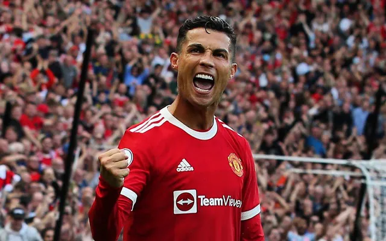

Thời thơ ấu và bắt đầu sự nghiệp: Những khó khăn và thử thách ban đầu, quá trình gia nhập Sporting Lisbon.
Manchester United: Những năm tháng đầu tiên ở Anh, sự phát triển vượt bậc dưới sự dẫn dắt của Sir Alex Ferguson.
Real Madrid: Giai đoạn đỉnh cao của sự nghiệp, những kỷ lục và danh hiệu vô địch.
Juventus: Những thử thách mới ở Ý, những đóng góp cho đội bóng.

Trở lại Manchester United: Tình yêu với Quỷ đỏ, những khó khăn và thử thách mới.
Các câu lạc bộ khác: (Ví dụ: Al Nassr) Những trải nghiệm mới trong sự nghiệp.
Đội tuyển quốc gia Bồ Đào Nha: Những thành công và thất bại, chức vô địch Euro 2016.